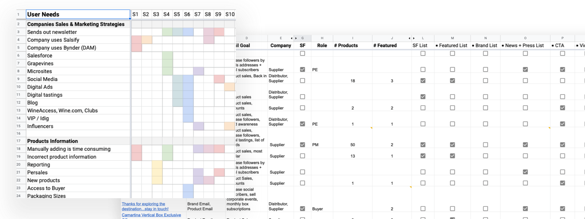
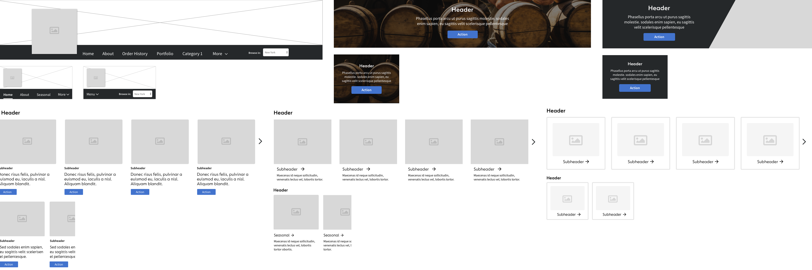
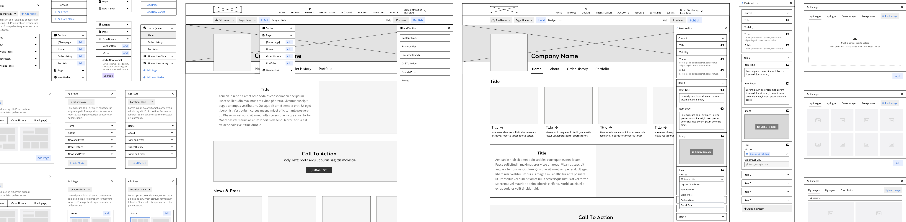

The problem
An aggregated marketplace with 1M+ unique product SKUs and 300K+ trade professionals in the beverage alcohol industry. Buyers could search products and create orders, but at the start of 2020, distributors and suppliers had no way to control product messaging or communicate their brand identity within the marketplace.
That gap became even more pressing with the added industry stress of COVID.
The solutionA self-serve content management system allowing customers to add, edit, and create promotional content within the aggregated marketplace.
Team & role
The team
- 3 marketer
- 3 product managers
- 3 devs
- 1 senior product designer 👋
User research
- Conducting user interviews
- Customer segmentation
- Identified user needs
- Mapping user journeys
- Market research
Designing
- Wireframing
- Information architecturing
- High-fidelity mockups
- Prototyping
Product strategy
- Project roadmapping
- Score impact/effort of features
- Agile project breakdown
Testing
- Usability testing
- A/B testing
- QA
Discovery & research
As a team we researched existing customers and prospects to evaluate marketplace viability. Surveys helped us collect and assess attitudes, so we could segment customer types for qualitative research.
Behavioral research
Gathering behavioral insights was the core of my research. I wanted to understand how customers communicated their products and brand to buyers, so I built conceptual mockups to walk participants through hypothetical scenarios, recording every need and problem to find trends across segments.

Translating research into needs
Combining interview trends with an analysis of customers’ newsletters, websites and social content, I grouped and prioritized core needs. I translated those needs into designs and ranked each feature in an importance matrix for engineering and product to evaluate.

Ideation & wireframing
While the feature library was in review, I designed the information architecture and wireframed how a user would add, edit, update and delete content. This helped engineering decide early what was and wasn’t feasible in our codebase.

Get the full story
Learn some surprising research findings and get an in-depth look at the pitfalls and successes it took to bring this product to market. The full, unedited case study is available on request.